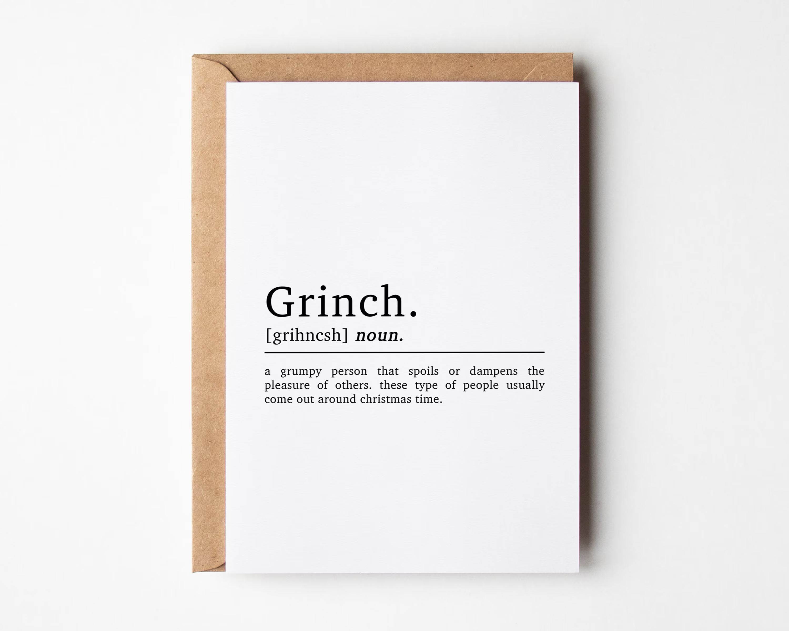

Lab 13: Hash Tables Project

Learning Objectives
In this exercise, you will:
- build a hash table data structure
- experiment with hashing algorithms to distribute data across all buckets, as much as possible.
Step 0
Our hash table will be a STL vector of STL sets (in class we used a vector of linked lists). Your code will read a file, dictionary.txt, that contains “all” the words in the English language, and insert each word into the hash table. There are about ~127,000 words in the file, but we will use a fairly small number of buckets, so there will be many collisions.
The goal of this exercise is to experiment with hashing algorithms to see if you can find one that distributes items well.
Step 1: Build the HashTable data structure and constructor
Inspect the code in HashTable.h and HashTable.cpp. There is not much there, but it is a start. Do notice that there is a static constant integer called TABLE_SIZE, initialized to the value 200.
Create the hash table data structure in the private: section, calling it myTable. For this project, the table must be a vector of sets of strings (in class we used a vector of lists).
In the constructor, initialize myTable to have TABLE_SIZE buckets by calling
myTable.resize(TABLE_SIZE);Also, in the constructor initialize mySize to 0.
Compile your code to make sure what you have written compiles.
Step 2: insert() and hash()
The prototypes for insert() and hash() are defined in the .h file. Now, you must implement them in the .cpp file. Use the code we saw in the slides in class for the hash function. The function should add up the first and last characters of the string, modding the result by TABLE_SIZE.
Try to compile the code using make. It should compile. Fix any issues if your compilation fails.
Step 3: main()
Now, create code in main(). Your code should define a HashTable object first.
Then, open the file dictionary.txt for reading, and read each word from the file, one at a time, inserting each word into the hash table.
Next, have the code close the file.
Compile your code.
Step 4: Testing
Of course, at this point, we have no idea if the items have been distributed well in the hash table, because we have no way to inspect the hash table contents.
Notice that there is a method called dumpInfo() defined, but currently the code does nothing. Fill in the code to do the following:
- For each bucket, print how many items are in it.
- Count and print the number of empty buckets.
- Calculate and print the average number of items in non-empty buckets.
Here is a snippet of my output. Make your output look similar:
number of items in bucket 0: 415
number of items in bucket 1: 351
number of items in bucket 2: 307
number of items in bucket 3: 414
number of items in bucket 4: 293
...
number of items in bucket 197: 560
number of items in bucket 198: 484
number of items in bucket 199: 341
--------------------------
Total number of elements in the hash table: 127141
Number of empty buckets: 0
Average number of items in non-empty buckets: 635Note: the output above is from after I changed the number of buckets in my data structure, and tweaked the hash algorithm, which you’ll do below.
After you implement your dumpInfo() method, call it from your main() code.
Step 5: Tweak Your Hashing Algorithm and Table Size
You will notice that the basic hashing algorithm (adding up the first and last characters of each string) does a very poor job of distributing strings across all buckets in the hash table. Your goal now is to improve the hashing algorithm to improve the distribution.
Experiment with different algorithms, but make sure they follow the criteria laid out in class:
- O(1)
- distribute values across all buckets.
- deterministic.
You MAY increase the number of buckets, but it must remain at or below 250 total. Do not change how buckets are implemented – they should remain sets.
Do not spend more than 1 hour tweaking your algorithm. Make sure your final code implements your best algorithm.
Write a comment in your hash() function that describes your algorithm, explaining why you think it works as well as it does.
Step 6: Submit
Submit your code via github, as normal.
IF YOU WORKED WITH A PARTNER, ONLY ONE OF YOU HAS TO SUBMIT, but UPDATE THE README.md to INCLUDE BOTH NAMES.
Grading Rubric
20 points total:
- 10 pts: hash table code (not including the hash function) is correct
- 5 pts: hash function obeys the criteria laid out in class.
- 3 pts: hash function works well (not obviously leaving many buckets empty and have some be very full).
- 2 pts: code is clean and hospitable.
Ways students lost points in the past:
- -2: Hash function does not appear to be evenly distributed but fills lower-numbered buckets way more (~2000 vs ~50)
- -4: Main function does not load words from file or call dumpInfo
- -1: Missing call to dumpInfo in main
- -3: Buckets are not evenly distributed (with many below 50 or above 2000) and some are empty. The smallest buckets are odd-numbered, which indicates a quirk in the algorithm which disfavors that half of the buckets
- -4: Most of the buckets are empty; a hashing algorithm should seek to evenly distribute words into buckets
- -1: Please output all bucket counts per instructions so the distribution can be seen.